유엑스리뷰에서의 출근이 끝나질 않는다.
나에게 있어 최고의 여건을 가진 일터지만, 이것저것 주어지는 업무가 점점 많아지다보니 자연스럽게 책임감이 늘어나고 그에 따라 발생하는 약간의 스트레스는 어쩔 수 없다. 어차피 내가 이 회사에 뼈 묻을 것도 아니고 나는 곧 네덜란드로 떠나기에 이제 이곳은 더욱더 나와 상관없는 곳이 되지만, 곧 책 출간을 앞두고 있음 + 내가 일을 빨리 처리해서 넘기지 않으면 중간에 낀 에디터님이 더 힘들어짐 + 대표님과 에디터님 모두 이 프로젝트에 생각보다 심혈을 기울이고 있음 등등 ..의 상황을 모르는 것이 아니기 때문에 내 선에서 더 완벽하게 일을 처리해서 넘겨드리고 싶다.
-
내가 하는 일은 간단하게 말하자면 '아동 일러스트 잡지에 들어가는 미술 프로그램을 기획하는 일'이다.
세부적인 업무로는 이런 것들이 있다.
1] 대표님께 프로그램의 큰 주제를 전달받고 그 주제에 부합하는 아동미술 프로그램을 기획 (기획안 작성하기)
2] 그 프로그램을 통해 아동이 만들게 될 작품의 예시작을 제작하고
3] 만드는 과정 사진을 단계별로 찍어 편집
4] 경우에 따라 프로그램을 진행할 때 필요한 활동지 편집물을 만들거나 도안을 만들기도 함
5] (최근에는) 지금까지 만들었던 프로그램의 레퍼런스들 / 혹은 유사한 프로그램을 인터넷 상에서 찾아 링크달고 문서화

-
내가 느낀 이 일의 어려운 점
✰ 아동 수준 예측에서의 어려움: 우선 가장 어려운 게 “5-9세 아동”의 수준을 가늠하고 그 수준에 알맞은 미술 프로그램을 기획하는 것이었다. 활동지에 들어가는 어휘의 수준, 활동지의 편집디자인(아이를 위한 폰트크기, 자간, 행간.. 등은 어느 정도인가?)은 물론이고 아이들의 그리기 / 만들기 실력 등…진짜 평소에 생각해볼 기회조차 없던 것들이었다.
✰ 과정 사진 촬영에서의 어려움: 내가 일하는 곳이 사진 촬영을 위해 최적화된 곳은 아니라서.. 조명, 배경 등이 정말 열악했음. 작은 조명과 배경지를 주시긴 했는데 찍는 족족 그림자 파티ㅋ.ㅋ (잘 모르긴 하지만 원래 사진 촬영에서 기본적으로 3점 조명 필요한 거 아님?..주광, 보조광, 후광.. 나는 걍 일(1)광이었다…) 그래서 그냥 잘 찍는 것은 일찍이 포기했고, 잘 ’편집..‘하기로 마음 먹었다. 나는 그래도 포토샵을 허접하게라도 다룰 줄 아니까 말이다… 포토샵으로 사진을 편집해서 드리기 시작하니까 대표님이 정.말 좋아하셨다. 에디터님도 결과물 보시자마자 함박미소를 지으셨다..(그렇게 내 일이 늘어났음. 스불재. 본인 무덤 본인이 팜)
✰ 글루건 안쓰고 만들기: 글루건은 (거의) 만능 점착제다. 근데 이 프로그램들이 타겟팅하고 있는 아이들의 연령층이 워~낙 어려서.. 대표님이 어느 시점부터인가 글루건 사용을 제한하셨다. 백번 이해한다.. 미취학아동이 어른 도움 없이 글루건을 어떻게 자유자재로 쓰겠는가.. 근데 글루건 없이 목공풀, 풀, 테이프 등으로 작품을 완성도있게 만드는 게 생각보다 많이 어렵다. 그래서 이런 부분에서 창의력이 많이 요구되었고.. 진짜 어려웠다. (아직 하고있으니까 진행형..-> 어렵다. 어렵ing 어려빙)
 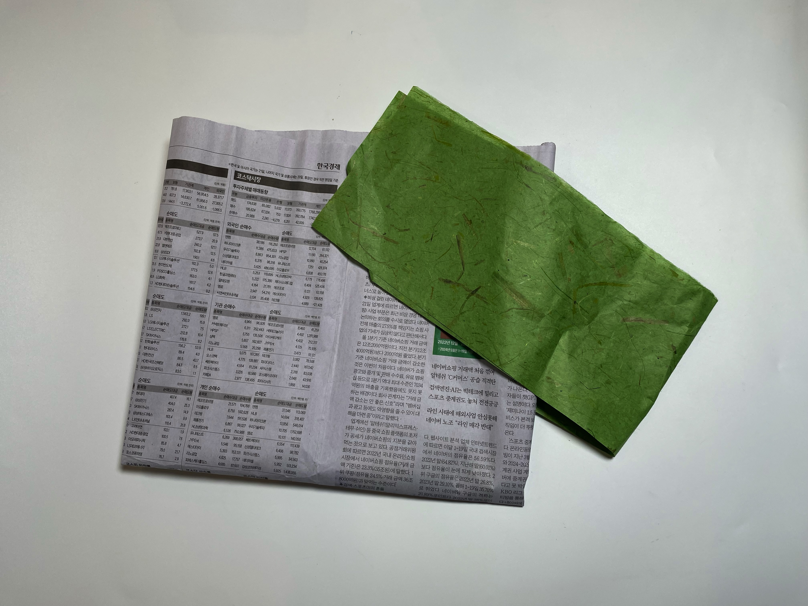
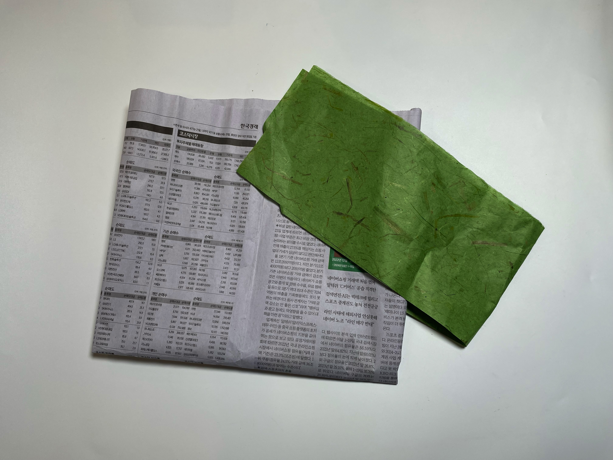
집에 거의 다 와가니 이만..
최초 작성일 2024.07.29
이 글은 이전에 작성한 중앙도서관 방문기에 덧붙여 적으려다가 생각보다 기록해두고 싶은 내용이 길어져 하나의 독립적인 글로 분리했다.
이하 모든 내용은 『뉴욕 이야기: 고담 핸드북』의 <옮긴이의 말>에서 가져왔다.
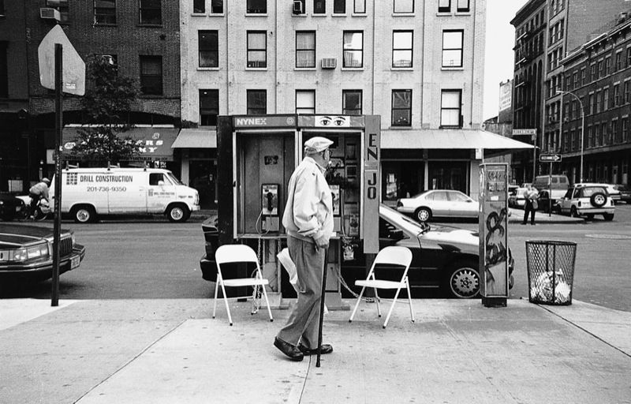이 책 『뉴욕 이야기』는 좀 복잡한 탄생의 구조를 가지고 있다. 이 작품은 폴 오스터의 소설 『거대한 괴물 Levithan』(1992)에서 시작된다. 이 책의 첫 부분에서도 설명하고 있듯, 폴 오스터는 소피 칼의 작품과 삶을 모델로 하여 ‘마리아 터너’라는 허구의 인물을 소설 『거대한 괴물』 속에 등장시킨다. 그런데 그가 이 소설 속에 소피 칼을 넣게 된 경위에는 또다른 이야기가 있다.
영화감독인 마이클 레드포드 Michael Radford ─그는 우리에게도 잘 알려진 영화 <일 포스티노>, 그리고 최근에는 <베니스의 상인>을 만들었다─ 는 소피 칼의 삶과 예술 세계를 영화로 찍고 싶어했다. 그래서 그는 폴 오스터에게 이 영화의 시나리오를 부탁한다. 하지만 제작비를 마련하지 못한 이들은 결국 이 영화를 포기하게 된다. 그 대신 폴 오스터는 소피 칼의 삶을 『거대한 괴물』에 넣기로 한다. 이 소설은 1993년 프랑스의 권위 있는 문학상 중 하나인 <메디치 문학상>(외국 문학 부문)을 받게 된다. 그리고 폴 오스터는 이 책을 통해 소피 칼의 예술 세계와 그녀의 이름을 대중들에게 알려주었다.
그후 자신이 다른 사람의 소설 속에서 허구의 인물로 변신한 모습에 매력을 느낀 소피 칼은 이 소설을 가지고 자신의 방식대로 또다른 현실과 허구의 놀이를 즐긴다. 이 책의 첫 부분 <게임의 규칙>은 이러한 이야기에 대한 설명이다.
그녀는 총 7권으로 이루어진 『이중게임 Double-jeux』이라는 제목의 전집을 만들어 허구와 현실의 게임을 즐긴다. 이 책은 이 전집의 마지막 7권에 해당한다. “허구와 현실을 뒤섞는 여러 방법 중 하나, 어떻게 소설 속의 인물이 될 수 있는가를 시도하는 것”이라는 설명이 붙어 있는 이 책은 허구와 현실의 관계를 이중적으로 뒤집어 질문한다.
경쾌하고 발랄한 이 ‘뉴욕 입문서’에서 내가 읽어낸 것도 바로 이러한 존재에 대한 질문이다. 존재에 대해 질문하기 위해 폴 오스터와 소피 칼은 우선 타인에 대해 질문한다. 나를 불편하게 만드는, 그러나 나를 존재하게 만드는 타자란 무엇인가? ‘존재의 조건으로서 타자’라는 무거운 주제를 그들만의 유머와 기발한 상상력으로 재치 있게 다룬다.
이 책은 폴 오스터의 황당한 조언과 이 조언에 충실히 복종하며 행동으로 실천한 소피 칼이 사진과 글을 통해 보고서 형태로 작성한 내용이다. 뉴욕에서의 삶을 아름답게 하기 위해서 왜 이런 기괴한 행동을 해야 할까? 황당하기 그지 없어 보이는 이 책의 내용을 어떻게 이해해야 하는가?
폴 오스터에게 뉴욕은 쓸쓸한 타인들의 도시다.
(중략)
익명의 타인들로 둘러싸인 대도시에서 사람들은 미소도, 대화도 없이 내 옆을 지나간다. 그렇지만 그 타인들 속에 내가 있고, 또 그 타인들이 바로 내 삶을 만든다. 그 타인은 내 안에 있는 타인이다. “타인은 나에게 있어서 나의 존재를 훔쳐가는 사람인 동시에, 나의 존재라고 하는 하나의 존재를 만들어주는 사람이기도 하다”라고 사르트르는 말하지 않았던가? 이런 타인의 도시에서 삶을 아름답게 하기 위해 폴 오스터가 소피 칼에게 권하는 네 가지 방법은 ─미소와 대화, 노숙자들에 대한 배려, 한 장소를 가꾸는 일─ 바로 타인을 통해 존재에 관한 문제를 제기하기 위함이다.
낯선 이에게 미소를 보내고, 말을 건네는 일은 무엇보다도 자신이 타자임을 드러내는 것이다. 내 앞의 낯선 이가 내게 미소를 보내며 말을 건넨다면 당신은 어떤 기분일까? 소피 칼이 ‘고역’이라 표현하며, 연출한 이 장면들은 타인의 시선을 끌고, 타인들에게 놀라움과 불편함, 혹은 재미를 만들어낸다. 그것은 또한 소피 칼에게는 자아의 편안함에서 벗어나, 존재를 비우고, 스스로 타자가 되어, 불편하고 낯선 상태를 경험하게 하는 것이다. 낯섦을 경험하는 것은 타인을 받아들이는 한 증거이다. 그리고 그것은 내 존재가 타인 속으로 들어가는 한 방법이다. 소피 칼은 이렇게 조금은 기괴한 방식으로 그렇지만 효과를 분명히 알아 볼 수 있는 방법을 통해 우리들에게 타자에 대한 질문을 던지게 한다.
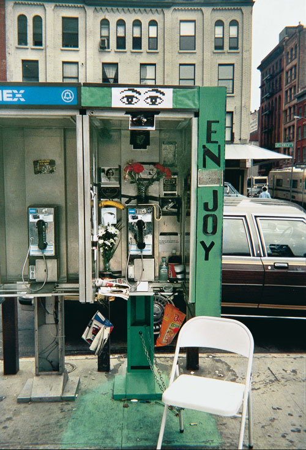‘한 장소를 아름답게 가꾸라는’ 조언에 소피 칼이 선택한 공중전화 부스 또한 상징적인 공간(타인과의 연결을 위한 장소)이다. 공중전화 부스에서 전화를 거는 사람의 모습을 유심히 바라본 적이 있는가? 그곳에는 혼자 말하는 사람이 있다. 보이지 않는 사람과 대화를 나누는 모습 또한 모르는 이에게 미소를 건네고, 말을 건네는 일처럼, 타인의 존재를 드러내준다.
폴 오스터와 소피 칼이 연출한 장면들은 존재와 타자의 관계에 대한 교훈을 주려는 것은 아니다. 타인과 존재하고 있는 방식 그 자체를 보여주고자 했다.


최초 작성일 2024.07.26
오늘은 연주언니, 연주언니 남친 동균씨, 그리고 지원언니와 저녁 식사를 했다. 연주언니의 일터 근처에서 만나 수제비와 보리밥을 먹었다.
만나기 전에는 넷이서 대화가 잘 통할까…? 싶은 마음이 들기도 했다. 나는 연주언니랑 긴 대화를 해본 적이 없기도 하고, 동균씨는 거의 잘 모르는 사이였기 때문이다.
결론적으로 나는 오늘 만남이 너무너무 좋았다. 연주언니는 앞으로의 작업과 진로의 방향에 대해 고민하고 있었고 나머지 셋 다 처지가 딱히 다르진 않았다. 하지만 대화를 하면 할수록 다 같이 막막해지기보다 좀.. 마음이 시원~해졌던 것 같다. 우리는 각자 다른 입장에서 좋은 조언과 경청을 해줄 수 있는 사람들이었다. 지금 다시 곱씹어봐도 대화가 너무 좋았다. 너무 좋은 대화는 어느 부분이 좋았는지 어떤 말이 기억에 남았는지 콕 집을 수 없는 것 같은데, 오늘 나눈 얘기들이 그랬다.
-
아, 그래도 기록하고 싶은 내용이 있다. 음.. 이건 내가 kabk 교환을 가게 되면서 문득문득 걱정이 되었던 점과 관련이 있다..
선형언니도, 연주언니도 kabk에서의 교환은 대단히 많은 것을 배울 수 있었던 소중한 경험이었다고 했다. (연주언니한테는 거의 전공에서의 터닝포인트 수준인 듯한 느낌..) 그리고 실제로 그들은 좋은 작업을 많이 남기고 왔다. kabk에서 4년의 시간을 보냈던 지원언니 역시 항상 학교의 장점들에 대해 많이 얘기해 왔고, 언니가 해온 작업 모두 내용에서나 형식에서나 높은 수준을 보인다고 생각했다.
그래서 걱정이 되었다. kabk에서 뭔가를 성취하고 와야 한다는 압박 아닌 압박이 느껴질 때가 있었다. 나에게 주어진 6개월의 교환은 마치 타임어택 미션 같았고, 헤이그에 도착해서 카운트다운이 시작되면 나는 무조건 그 기간 안에 작업적으로 성장해야 하고, 전공자로서의 깨달음도 얻어야 하며, 좋은 작업도 남겨야 한다는 의무감이 들었다.
그들은 그 학교가 너무 좋았다고 했는데, 정말 좋은 경험이었다고 했는데.. 그러면 나에게도 뜻깊은 경험이 되어야 하는 거 아닌가? 그 소중한 기회를 알차게 써먹어야 하는 거 아닌가?... 은연중에 나는 이렇게 생각하고 있었다. 한 학기 안에 무조건 이전보다 더 나은 작업을 보여줘야 하고, 나는 더 나은 사람이 되어 있어야 한다. 그래야만 한다. 왜냐하면 내가 보기엔 이전에 갔다 온 사람들이 그랬으니까.
-
왠지 모르겠지만 이 생각은 꼭 연주언니한테 털어놓고 싶었다. 그냥 다른 사람도 아니고 연주언니한테 먼저 말하고 싶었다. ‘언니라면 좋은 해답을 줄 수 있을 거야!’ 이런 마음은 아니었고, …딱히 별 이유는 없었다. 그냥 느낌이 그랬다고 해야하나..? 근데 내 예감이 맞았던 것 같다. 이 말은 연주언니한테 전달되는 게 맞았다. 나의 말을 듣던 언니의 눈빛을 잊을 수가 없다. 경청해 주는 그 눈빛이 정말 고마웠다. 그리고 집에 돌아가는 길, 카톡으로 이런 말도 남겨줬다.
나는 네덜란드에서 느린 시간들을 보내면서, 굳이 애써서 최선을 다 하고 체력을 다 쏟지 않아도 나에게 만족할 수 있다는 걸 배운 것 같아!! 걱정말구. 네돌 가기 전에 또 봐 ㅎ.ㅎ 맘이 너무 예뽀… ㅎㅎ..
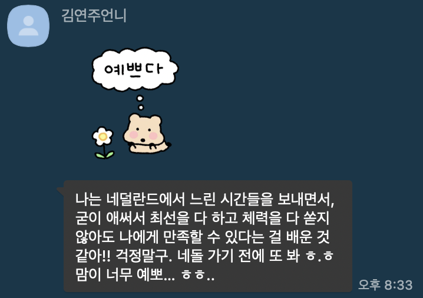내가 요즘 괜찮은 사람들만 만나고 다니는건지 모르겠는데, 내 주변에 좋은 사람이 너무 많다. 정말 내 얄팍한 마음을 한없이 꽉꽉 채워주는 소중한 인연들이 참 많다. 연주언니의 저 짧은 몇 마디를 읽는데 지하철에서 나도 모르게 눈물이 그렁그렁~~.. (*중요* 흐르진 않음) 흐아앙. 정말 큰 위안이 되었다. 나도 그들에게 괜찮은 사람이길 바란다. 오늘 대화 나눠준 연주언니, 지원언니 그리고 동균씨에게 감사!
최초 작성일 2024.07.25
이제 여기 글쓰는 건 어느 정도 익숙해졌고, 이곳의 쓸모를 본격적으로 고민 중이다. 어떤 기능을 적용시켜볼지, 어떤 역할을 부여할지, 이곳은 나에게 어떤 의미인 것인지... 더 나아가 웹사이트 형식의 기록이어야 하는 이유는 무엇인지. 다른 사람들의 personal web, blog web 따위의 것을 are.na에서 서칭해보고 있는데 재밌는 거 참 많다. 고민 중..
최초 작성일 2024.07.24

휴학하는 동안에 학교 중앙도서관을 자주 갔다. 왜 학교를 열심히 다니던 1~2학년 때는 이 좋은 곳에 오질 않았던건지…. 처음에는 알라딘에서조차 구할 수 없었던 책 ‘영화에서의 몽타주 이론’을 빌리기 위해 간 것이었다. 그때 한창 영화 이론에 대한 책들에 호기심이 생기기도 했고 책 지름신이 와서 알라딘에 거의 50만 원어치의 책을 장바구니에 넣어놨었는데, 몇몇 책들은 굳이 구매해서 소장까지 하지 않아도 되겠다 싶어 그냥 중도에서 대출해서 바리바리 싸 들고 집에 왔다. 역시나 모두 완독하지는 못했고....ㅎ. 대출연장의 연장의 연장을 하다가 최근에서야 다 반납했다.

[대출 목록]
: 추천 목록은 아니고 정말 말 그대로 대출했던 책 목록이다. 추천 목록이 아닌 이유는 나도 다 읽어보지 못한 게 많기 때문….
저 중에서 사뮈엘 베케트의 <포기한 작업으로부터> 이게 진짜 안 읽혔다. 모든 문장이 엄청나게 은유적인데 나는 그런 유형의 문장들이랑 아직 좀 친하지 않은 것 같다. 그래도 수록된 작품 중 책의 제목을 맡고 있는 <포기한 작업으로부터> 이건 좀 읽을 만했는데, 완독할 끈기가 앞으로도 쭉.. 생기지 않을 것 같아 그냥 반납했다.
[지금 대출 중인 도서들]
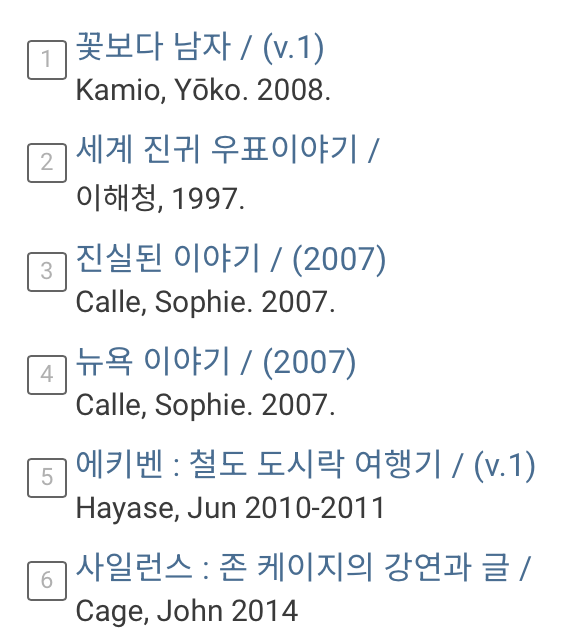아니 나 만화책에 이렇게 재미를 붙인 게 초등학생 이후로 처음인 것 같다. 꽃보다 남자 만화가 진짜 고퀄이다. 꽃남 드라마도 그렇게 흥미롭게 보진 않았던 것 같은데, 아니 애초에 드라마를 다 보지도 않은 듯.. 근데 만화 진짜 너무 재밌다. 빌려오고 집에서 한 2시간?도 안돼서 후루룩 다 읽음. 순정 만화 그림체 구경하는 것도 재밌고 스토리도 진짜 저세상 설정이라 웃기다.

또 내가 ‘고독한 미식가’ 같은 일본 음식 만화를 좋아해서 빌려온 ‘에키벤: 철도 도시락 여행기’. 기차역 혹은 기차에서 파는 도시락이 매우 디테일하게 표현되어 있어서 보는 맛이 있다. 근데 여기 남자 주인공 아저씨가 좀 열받는게.. 아내가 기차여행 다녀오라고 티켓까지 끊어줬더니 기차에서 만난 기자 나나 씨한테 흑심을 품는다... 자꾸 같이 도시락 먹으면서 얼굴 붉히고, 스토리랑 전혀 상관없는 것 같은데 아저씨가 자꾸 나나 씨 보고 싶어 하고, 궁금해하고. 결국 1권 끝날 땐 나나 씨가 아저씨 볼에 뽀뽀함;;.. 만화는 무난하게 볼 만한 것 같은데 저게 너무 거슬려서 2권 볼까 말까 고민중.

-

그리고 소피 칼의 책 두 권과 우표책 한 권, 존 케이지의 책 한 권 이렇게 더 빌려왔다. 나는 소피 칼의 작업과 책이 너무 좋다. (아 책도 작업의 일환이겠군.) 책을 다 읽어봐야 더 정확한 코멘트가 가능하겠지만 그녀가 작업을 진행하는 방식이 간단명료해서 좋다. 그리고 작업이 유머러스하다는 점, 고군분투해서 작업의 소재를 끄집어내기보다 생활에 작업을, 작업에 생활을 녹여낸다는 점이 좋다. 그래서인지 ‘뉴욕이야기’도 정말 술술 읽힌다. ‘뉴욕이야기’는 폴 오스터와 소피 칼의 공동 작업 기록이라고 볼 수 있다. 소피 칼은 뉴욕에서 지내는 동안 폴 오스터의 지령에 따라 몇 가지 반복적인 임무를 수행한다. ‘미소 짓기’, ‘샌드위치 나눠주기’, ‘담배 건네기’, .. 뭐 이런 것들. 소피 칼은 임무를 수행하면서 그녀가 그녀 마음대로 소유한 장소 ‘공중전화 부스’에서 사람들을 관찰한다. 그리고 기록을 남긴다. 이 기록을 읽고 있자면 나도 그 상황에 놓인 것처럼 완전히 몰입된다. 학교 도서관에도 없는 책이자 절판된 책 ‘시린 아픔’은 알라딘에서 구매했고 곧 배송될 예정이다. (학교 도서관에 없다니.. 다소 충격. 중도에는 없는 책이 없다고 생각했는데.. 그리고 시린 아픔 정도는.. 있을만하지 않나? 아무튼, 그래서 희망 도서로 신청해 두긴 했다.)
-


-
책을 빌려두면 그 책의 내용이 온전히 내 것(내 생각)이 된 듯한 착각ㅋㅋ에 기쁜 건지는 모르겠지만 어쨌거나 나는 책을 구경하고 책을 읽는 것이 재밌다. 지금 일하는 출판사의 대표님이 ‘책은 내가 가보지 못한 세계로 향하는 창문이다.’ 뭐 이런 상투적이고.. 어찌보면 유치한 이야기를 하신 적이 있는데 완전히 동의하는 바이다. 나는 요즘 책을 통해 온 세계를 누비는 기분이다.(이라고 말하고 유튜브 틀기)
최초 작성일 2024.07.24
최근에 갑자기 잘 연락하고 지내지 않던 혹은 새로운 사람과 이야기를 나눌 일이 많았었다. 서로를 잘 알지 못함에서 오는 긴장감 때문이었는지는 모르겠지만 꽤나 재미있었다.
-
준상이를 만났다. 난 동기들과의 약속이 별로 없는 편이라 (왜지. 사회성이 뒤졌나..) 준상이와의 저녁식사는 굉장히 “특별한” 만남이었다. 준상이는 통찰력이 있는 친구다. 그래서 준상이랑 대화를 나누면 상쾌해지는 기분이 들기도 한다. 간만에 반가웠다.
-
-
비가 퍼붓는 날, 네덜란드에서 돌아온 지원언니를 만났다. 비가 너무 많이 와서 가는 길이 정말 쉽지 않았지만, 언니를 보면 항상 행복해진다 ..~ 어떻게 그리 긍정적인 에너지만 나에게 줄 수 있는지! 마주보고 깔깔대며 행복한 이야기만 하는 것도 아닌데, 언니와 만났을 때의 그 기운이 참 좋다. 언니와 옷 얘기를 하는 것도, 구석구석 쇼핑을 다니는 것도 맛있는 걸 먹는 것도 다 재밌다. 관심사와 취향이 이렇게 잘 맞을 수 있다는 게 참 신기하다. 언니에게는 항상 말하는 거지만 나는 2023년 1학기에 언니를 알게된 것을 정말 손에 꼽을 행운이라 여긴다. KABK로의 교환에 관심이 생긴 것에는 지원언니의 영향도 크기 때문에..
-
지원언니와 서촌을 돌아다니다 hai 샵에서 나오는 연주언니와 마주쳤다. 딱 어떻게 마침 그렇게 마주치지!? 저번에도 지원언니와 서촌에 갔을 때 연주언니를 잠깐 만났었는데, 이번에도 이 멤버 그대로 찰나의 만남을 갖게 되었다. 연주언니가 네덜란드에서의 공부에 관심이 많아서인지 지원언니에게 흥미를 갖는 것 같았다. 나중에 꼭 셋이서 커피라도 한 잔 하자!라는 말을 남기고 각자 갈 길을 갔다. 집으로 돌아오니 연주언니에게 연락이 와 있었다. 지원언니와의 약속을 잡자는 메세지였다. 아까 했던 말들이 그냥 인사치레로 한 것이 아니라는 사실에 조금 기뻤다. 일정을 이리저리 조율해서 다음주에 연주언니 남자친구분까지 해서 넷이서 보기로 했다. 이어서 연주언니는 “파밍파티”라는 이벤트의 게시물을 보내주며 지인분이 주최하는 행사가 있는데 (언니도 행사의 내용은 뭔지 정확하게 모른다고 했음) 관심있으면 같이 가자고 했다. (여기에도 언니 남자친구분이 같이 동행 -견문메이트라고 했다. 건강한 관계같아서 좋아보였다 ㅎ.ㅎ) 아쉽게도 당일날 시간과 체력 부족 문제로 파티에 참여하지 못했지만 이렇게 무언가를 같이 하자고 제안해주는 언니가 있어 참 고마웠다. 나를 생각해주는 그 마음이 고마웠다. 연주언니와의 만남이 기대가 된다.
-
석현님이 코펜하겐에 가셨고, 내가 올해 4월에 여행하면서 좋았던 곳을 추천드렸다. 스톡홀름에만 계시다가 오시는 줄 알았는데, 코펜하겐을 돌아다니시는 걸 보고 바로 연락을 드렸다. 내가 워크샵 준비했을 때 석현님께서 워낙 많은 도움을 주셨던 터라 이렇게라도 보답을 드리고 싶었다. 브런치 카페, 베이커리, 서점, 도서관 … 장소의 성격도 다양하게 고려해서 추천리스트를 만들었고 특히나 맛있게 먹은 게 있다면 메뉴까지 같이 소개드렸다. 석현님께서 이미 계획한 여행 루트도 있을 것이고, 취향에 따라 별로 안 땡기는 곳이 있을 수 있기에 내 추천장소들을 다 찾아가보실거라고 생각하진 않았다. 근데 연락을 드린 그 다음 날부터 정말 열심히 다니시길래 굉장히 뿌듯했다. 추천 메뉴까지 그대로 드시고 인증샷처럼 스토리에 전부 올려주셨다. ㅋㅋㅋ 석현님은 정말 매너가 좋으신 분이다. 내가 석현님에 대해 잘 아는 것은 아니지만, 사람을 대하는 태도가 투명해서 좋다.
-
3주 간의 SAA워크샵이 끝났다. 사실 워크샵은 4주차까지 있지만 컨퍼런스 세션은 흥미가 크게 생기지 않아서 (그리고 토요일 오전에 파주까지 가는 게 조금 귀찮음..ㅎ) 신청하지 않았다. SAA워크샵은 학교에서 주최하는 워크샵도 아니었고 정말 외부에서 비전공자, 전공자 할 것 없이 다양한 연령대가 모이는 행사였다보니 신기한 사람들이 많았다. 워크샵에서 만나 밥 한끼하며 이야기를 나누게 된 사람이 2명 있다.
[1주차]
1주차에는 나와 비슷하게 시각디자인을 전공하고 있는 언니 한 분과 순두부찌개에 수육 정식을 먹었다. 대학교는 이미 졸업하셨고, 졸업 이후 fnt와 works에서 인턴을 하시다가 8월 달에는 RISD로 석사 유학을 가신다고 했다. 주변에서 실크 작업을 볼 기회는 많았지만 (실제로 fnt에서 SAA로 실크스크린 작업을 자주 맡김), 본인은 실크스크린에 대해 잘 아는 게 없고 직접 해보고 싶어서 신청하게 되었다고 했다. 이 만남은 저번에 간단하게 기록을 남겼기에 이하 생략..
[3주차]
그리고 어제, VFX 디자이너 한빈님과 돈까스를 먹었다. 한빈님도 1주차부터 3주차까지 전부 출석하셔서 어느 정도 내적 친밀감을 느끼고 있긴 했다. 워크샵 때마다 작업자분들에게 질문도 많이 하시고, 작업에 임하는 태도가 엄청 열정적이어서 재미있는 사람이라고 생각했다.
1
한빈님과는 집 가는 길이 겹쳐 어쩌다 보니 자연스럽게 이야기를 나누게 되었다. 국민대에서 영상디자인을 전공하시고 졸업하기 전부터 지금까지 프리랜서로 일을 하고 계신다고 했다. 뉴진스, 바밍타이거, 황소윤, 장기하 등 최근 엔터 쪽에서 큰 인기를 끌고 있는, 주목받는 아티스트들의 작업을 많이 하신 영상 전문가(?)셨다. 그렇지만 한빈님께서는 영상이 본인 평생의 직업, 즉 뼈를 묻을 분야는 아닌 것 같다고 하시며 영상이 본인과 잘 안 맞는 걸 느낀다고 하셨다. 그냥 단순히 지금 작업이 힘들어서 하는 앓는 소리는 아니라고 하셨는데 신기했다. 저렇게 한 분야에서 감각이 뛰어난, 어떻게 보면 타고난 재능을 가진... 사람도 저런 생각을 하는구나..
2
한빈님은 정말 영상 말고 여기저기 관심을 두는 분야가 많았다. 나는 이게 오히려 한빈님이 영상 쪽에서 더욱 전문성을 갖출 수 있는 계기가 된 것이라고 생각했다. 음악에도 관심이 있다 보니 영상에서 음향을 더 돋보이게 할 수 있는 효과를 구상할 수 있고, 타이포 등 평면 디자인에도 관심이 크시다 보니 영상 asset의 디테일에서 더 높은 퀄리티를 뽑아낼 수 있는 것이다. 실제로 그렇다고 했다. 본인은 다른 영상 디자이너들이 고려하지 않는 것까지 보는 감이 있으니까, 결과물에서의 마감이 달라지고, 그래서 사람들이 본인에게 일을 맡기는 것 같기도 하다고.. 그리고 한빈님은 레터링 작업하는 것도 좋아하셔서 영상 편집뿐만 아니라 타이틀 레터링 디자인도 꽤 하시더라는.. 그래서 일이 더 많이 들어온다고 했다. 멋있었다.
3
한빈님은 학교에 다닐 때 영상디자인을 전공하면서도 음악 전공 수업, 시각 디자인(타이포그래피 등), 빅데이터융합경영..? 이런 타전공 수업 청강을 엄청나게 많이 하셨다고 했다. 본인은 궁금증이 생기면 무조건 해봐야 하는 타입이라면서, 그리고 이게 대학생이 등록금을 알차게 쓰는 하나의 방법이라고 생각한다고.. 나도 최근에 어떤 것에 호기심이 생기면 최대한 행동으로 옮기려고 노력하는 편이라 꽤 공감되었다.
4
한빈님은 자신의 삶을 건강하게 유지하려고 노력하시는 것 같아 보기 좋았다. 본인의 현 상황에 안주하지 않고 계속 탐구하는 태도라 해야 하나. 한빈님은 지금 본인에게 딱 맞는 일은 무엇일지, 본인이 무엇을 좋아하는지 계속 찾고 있는 과정에 있다고 하셨다. 나도 내가 어떤 디자인을 재밌어하는지, 뭘 하고 싶어 하는지 계속해서 고민이 생기는 시점이었기에 그런지 서로 대화가 잘 통했던 것 같다.
5
보통 영상/3D 디자이너, 음악 엔지니어분들처럼 모니터만 온종일 바라보고 있어야 하는 사람 중에는 밤낮이 바뀐 그런 다소 망가진.. 루틴을 갖고 계신 분이 많다고 생각했는데, 한빈님은 그렇지 않은 것 같아 신기하다고 말했다. 왜냐하면 이 워크샵도 오전반, 오후반을 선택해서 신청할 수 있는 거였는데 한빈님은 굳이 주말 오전반에 오신 거니까.. 근데 이것도 건강한 생활에 본인을 의식적으로, 억지로라도 끼워맞추기 위해서 굳이 굳이 오전으로 선택한 것이라고 했다.
좋은 인생 선배를 만난 느낌이었다. 재미있는 만남이었다. 독서, 전시 관람 이런 걸 좋아하신다고 해서 더 동질감이 느껴졌다. 한빈님도 나도 오혜진 디자이너의 작업을 좋아해서 대화도 잘 통했다. 워크샵이 순기능이 이런 것 같다. 이번 워크샵에서 나는 단순히 실크스크린을 다루는 기술 그 이상의 것을 얻어간다.
최초 작성일 2024.07.21
1. 까먹을까봐 기록하는 대화
학부생 때는 내가 뭘 하고 싶은지 계속해서 찾는 기간이라는 것. 정말 찾기만 해도 됨. 뭘 자꾸 보여주려고 하지 말기. 조급해하면서 그럴 듯해보이는 결과물을 선보일 필요 없음.
기술적으로 완성도 있어보이게 만드는 것은 누구나 할 수 있음. 지금 당장에라도 외주 맡기면 가능한 일. 그렇다면 내가 해야할 것은 나만의 내용을 만드는 것. 모든 작업 프로세스에서 가장 중요한 단계는 ‘리서치와 구상’. 절대적으로 긴 시간을 투자해야 함.
나만의 가치를 탐구하고 끝까지 밀고 나가야 함.
돈, 명예 이런거말고 나만의 목표와 가치가 있어야 함.
어딘가에 취업해서 일을 하는 것을 우선적인 목표로 삼는 건 남의 가치를 내가 대신 실현해주려는 기계가 되려는 것과 다름 없음.
취업 경험을 바탕으로 이런 세계는 어떻게 돌아가나 배우고, 그걸 기반으로 나의 가치를 실현할 수 있는 무언가를 독립적으로 만드는 방향으로.
2. 선한 사람
선한 사람이라는 말을 들었다. 천사같이 착하다.. 뭐 이런 뉘앙스의 말은 아니었다. 세상이 무너져서 눈에 뵈는 게 없어도 다 죽자! 너죽고 나죽자하면서 누굴 죽일 사람은 아닐 것 같다고 했다. 무슨 이런 표현이 다 있나 ㅋㅋ. 그치 내가 누굴 죽일 사람은 아니긴 하지.. 내 속마음을 제일 잘 아는 건 나 자신이니까 난 절대 착한 사람은 아니라고 생각했다. 난 남들이 생각하는 것처럼 마음씨가 고운 것도 아니고, 주변을 향한 진심 어린 칭찬을 건네는 것보다 입 밖으로 꺼내지 못할 질투심을 느끼는 게 더 쉬운 그런 사람이기 때문이다.
내 친구들은 나랑 왜 친구를 하는지 내가 정말 좋은건지 끊임없이 의심하고 그들의 진심을 믿지 못하고 그들에게 인정받고 사랑받고 싶어하지만 이런 마음을 내색하면 사람이 떠나갈까봐 의연한 척 하기도 한다. 결핍이 있었던 것도 아닌데 뭐가 이리 불안한지. 이런 불안을 감내하는게 관계의 전부인 것 같다. 사람 사이 사소한 것에 대수롭지 않아할 것 같다는 얘기를 많이 듣기도 했지만 아닌 것 같다. 나는 내가 싫어하는 사람한테까지도 불필요한 관심을 갖는다.
또, 나는 이런 말을 하면 저 사람이 싫어하지 않을까, 오늘 저 사람이 집에 돌아가는 버스 안에서 내가 털어놓은 거지같은 속마음을 곱씹어보진 않을까, 그래서 나에게 실망하게 되진 않을까. 이런 아무짝에도 쓸모없고 나 자신만 지치게 하는 고민들을 반복한다. 이걸 쓰면서도 그런 고민은 멈추지 않는다. 이걸 보게 될 누군가는 날 속 좁고 쪼잔한 사람이라고 생각하겠지?(재현씨 그렇게 안 봤는데~ 정말 무서운 사람이다~) 근데 어쩌냐 이게 나다. 그리고 당연히 나를 다 내어 보이는게 그리 좋지 않은 것이라는 것도 안다.
3. 일종의 자학?
나는 사람들한테 작은 거라도 기념하며 선물하는 걸 좋아하고 이것저것 잘 챙기는 편인데, 문득 내가 이런 걸 즐기는 것이 사람들에게 챙김 받고 싶은 욕구를 이런 방식으로 푸는 것일수도? 라는 생각이 들었다. (기브앤테이크를 하자는 건 아니다.) 돈은 돈대로 쓰면서 상대방이 갖는 순간의 만족에 위안을 느끼고.. 일종의 자학 행위이지 않나.
최초 작성일 2024.07.17
요즘 사는 게 도통 재미가 없다. 친구들 붙잡고 잼얘 잼얘~하는게 그냥 하는 소리가 아니라 진짜 재미있는 뭔가가 좀 필요해서 그렇다. 일명 이 ‘노잼 시기’는 간헐적으로 찾아와서 정말 내 인생을 노잼으로 만든다.
당장 하고 싶은 작업도 딱히 없고
먹고 싶은 것도 없고
하고 싶은 것도 없고
기다려지는 일 같은 것도 없다.
사람들을 만났을 때의 그 에너지는 느끼고 싶은데 사람들을 만나고 싶진 않다.
몸이 무겁고 힘이 나지 않는다. 단순하게 극단적으로 말하면 우울한 느낌에 가까운 것 같다.
근데 한 학기 휴학하고 옴팡지게 자유로운 시간을 보냈으면 이런 스트레스도 없어야 하는 거 아닌가?라는 생각에 또 스트레스다. 계속 쉬었는데 힘들 게 뭐가 있다고.. 그치만 나름대로 자잘하게 머리 지끈거리는 일이 많아서 그런가.. 마음이 척박~하니 불평만 늘고 긍정적인 에너지는 생기지 않는다. 사람을 대할 때도 묘하게 싸가지가 없어진 느낌이다. 모두에게 미안~ (다들 미안~) 이게 내가 t라 미숙해..서 이러는 정도가 아니라 그냥 일상에서 동태눈깔이 된 게 나도 느껴진다. 아!!! 이러면 안되는데. 이런 우울호소글도 안되는데!.. 사람들한테 징징대고 싶지 않은데 사람들한테 둥가둥가받고 싶어. 이런 양가 감정 대체 뭐지 >,<..
이런 노잼시기에 빠질 수 없는게 바로 자기비판이다. 하하. 최근에 그런 생각을 좀 했다. 난 너무 주관도 없고 내가 하고 싶은게 정확히 뭔지도 모르는 것 같고, 내실이 없는 사람인 것 같다는 생각. (써놓고 보니까 너무 극단적으로 부정적이네. 나 자신을 저정도로 미워하진 않는데..?) 분명 예전엔 하고 싶은 것도 많았던 것 같고 창의적인 아이디어도 많았던 것 같은데 요즘엔 걍 겉멋든 패션-디자이너같다. (패디과의 그 ‘패션’말고 패션우울증할 때 그 ‘패션’..) 근데 이게 건강한 객관화에서 시작된 판단은 아니라 나도 ‘이건 좀;;’ 싶은 자아비판이긴 하지만, 뭐 저런 생각이 아예 없는 건 아니다.
호불호가 명확하고 내 주관, 내 의견이 뚜렷한 사람이 되고 싶다. 근데 요즘 내가 멋있다고 느끼는 사람들이 늘어나면서, 내가 그 사람들의 배움을 그냥 훔쳐쓰려는 것 같다고 생각했다. 그 사람들이 본인의 시간과 노력을 투자해서 얻은 관점과 의견을 내가 홀라당 내것으로 가져오고자 하는 것 같이 느꼈달까.. 그런 측면에서 내가 너무 게으른 인간처럼 여겨져 또 슬퍼졌다.
최초 작성일 2024.07.16
아니. 집구하는거 진짜 너무 힘들잖냐.. 서울에서 집구하는 청년들의 심정이 이런건가? 저 많은 집 중에 내가 살 곳 한 군데는 있겠지 싶었는데 걍 없음;;.... 역사가 300년이 넘은 학교에서 기숙사도 제공해주지 않는다니.. 사설 기숙사랑 연계도 안되어있다니.. 생각하면 할수록 진짜 뻔뻔징어 학교임.. 갈 때쯤 되면 어떻게든 구해지겠지?라고 생각하고 있지만 이 기세라면 안 구해질지도?라는 생각도..ㅋㅋ 우선 6개월로 계약하는 게 쉽지가 않고 (최소 1년이 조건인 곳이 많음), 연락을 돌려도 답을 안주고.. 너무 비싸고 먼 곳은 적합하지 않으니 아예 후보에서 지울 수밖에 없고..
최초 작성일 2024.07.15
실크스크린 워크샵을 다녀왔다. 실크스크린 작업물은 꽤 많이 접해보고 어떤 방식으로 진행하는지도 대강 알고 있긴 했지만, 내가 직접 해본 적은 없는 것 같아서 경험해보고자 신청했다. 실크스크린은 다른 인쇄와 비교했을 때 실재적인 물성을 가장 잘 느낄 수 인쇄라고 생각해서 늘 흥미를 가져왔다. (나는 시아노타입이나 레터프레스처럼 화면을 이루는 요소들을 직접 내 손으로 만져가며 하나하나 채워나가는 작업을 좋아하는 것 같다.)
우선 인쇄라는 영역에 대한 개괄적인 설명으로 워크샵을 시작해주셨다. 출력과 인쇄를 가르는 가장 큰 차이점은 ‘판’의 유무이며, 간단하게 오프셋 인쇄는 물과 기름의 반발을 사용하는 인쇄, 박인쇄는 볼록한 면을 활용하는 인쇄, 우리가 진행할 실크스크린은 메쉬 천을 사용하여 잉크를 뚫린 면으로 통과시켜 결과물을 얻는 인쇄..(공판화의 개념) 뭐 이런 설명이었다. 나는 그냥 가벼운 마음으로 체험하러 간 것이었는데 전문적인 이론 수업도 들을 수 있는 워크샵이라 내심 놀라기도 했다. 또, 작업자분들께서 본인들의 에이전시와 작업에 엄청 자부심을 갖고 계신게 느껴졌고, 실크스크린 인쇄 분야 자체를 사랑하고 아끼는 게 느껴져서 나도 덩달아 더 호감이 생기는 느낌이었다.
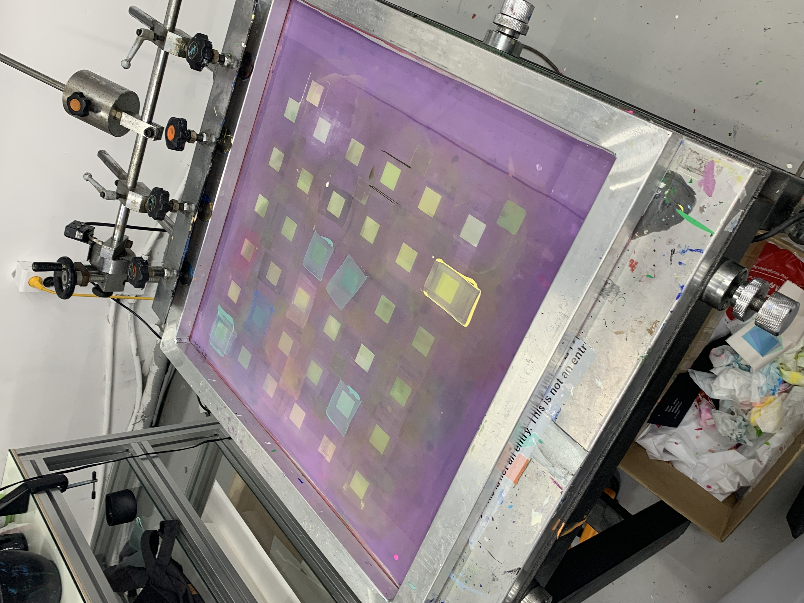오늘은 color 파트의 수업을 진행했다. 직접 안료와 베이스 등을 꺼내 보여주시며 어떤 방식으로 조색을 하는지 보여주셨다. 인쇄물에 찍혀나오는 잉크를 날것(?)의 상태로 보는 게 드문 일이다 보니 그 간단한 과정을 구경하는 것조차 굉장히 신기하게 느껴졌다. 실크스크린의 잉크로는 정말 여러가지가 사용될 수 있다하더라. 아크릴성 잉크부터, 모델링 페이스트까지.. 모델링 페이스트가 사용된다는 건 예상하지 못했는데, 그냥 정말 종이, 캔버스 위에서 색을 낼 수 있는 것이라면 어떤 것이든 사용 가능한 듯. 그리고 안료같은 것을 섞어서 더 정밀하게 원하는 색을 뽑아내기도 하며, 때에 따라 흑연, 펄 가루 등을 조합하는 경우도 있다고 하셨다. 잉크를 만드는 과정은 이러하다. 안료와 수성용액을 먼저 혼합한 다음, 투명 베이스를 섞어 프린팅에 곧바로 사용할 수 있는 형태로 만들어준다.
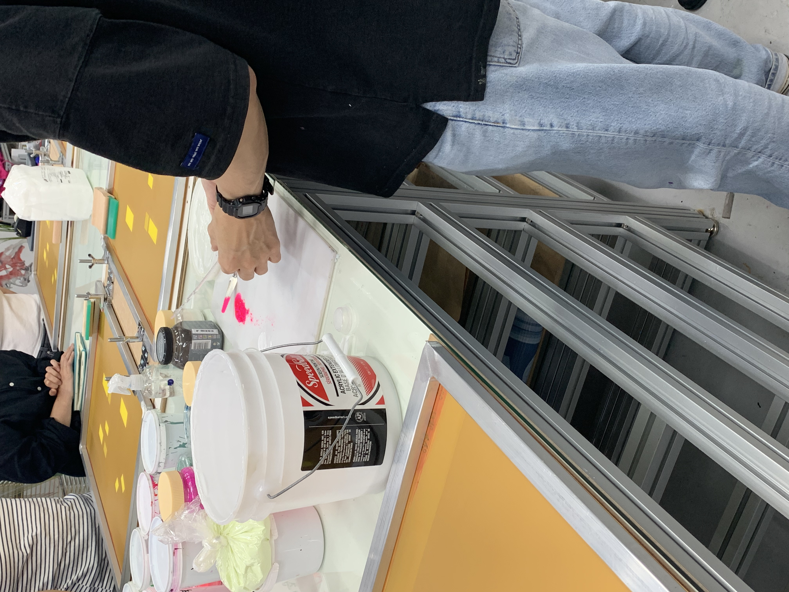우리가 해야했던 것은 간단한 네모들을 종이에 인쇄하는 작업이었는데 생각보다 어려웠다. 잉크가 종이에 번지는 경우도 많았고, 한번 색을 밀어낼 때 균일한 정도로 종이에 찍어내는 것도 결코 쉽지 않았다. 나름 혼자 사부작거리는 일에는 손재주가 있다고 생각해서 좀 만만하게 봤었는데 뒤통수 맞음.. 그리고 이게 2인 1조로 작업하는 구조였는데(보통 실제 작업하실 때도 2인 1조, 3인 1조로 많이 하신다고 함) 나랑 같은 조로 작업했던 분이 뭔가 팔힘을 잘 못 쓰셔서 스퀴지를 들고 자꾸 바르르르…
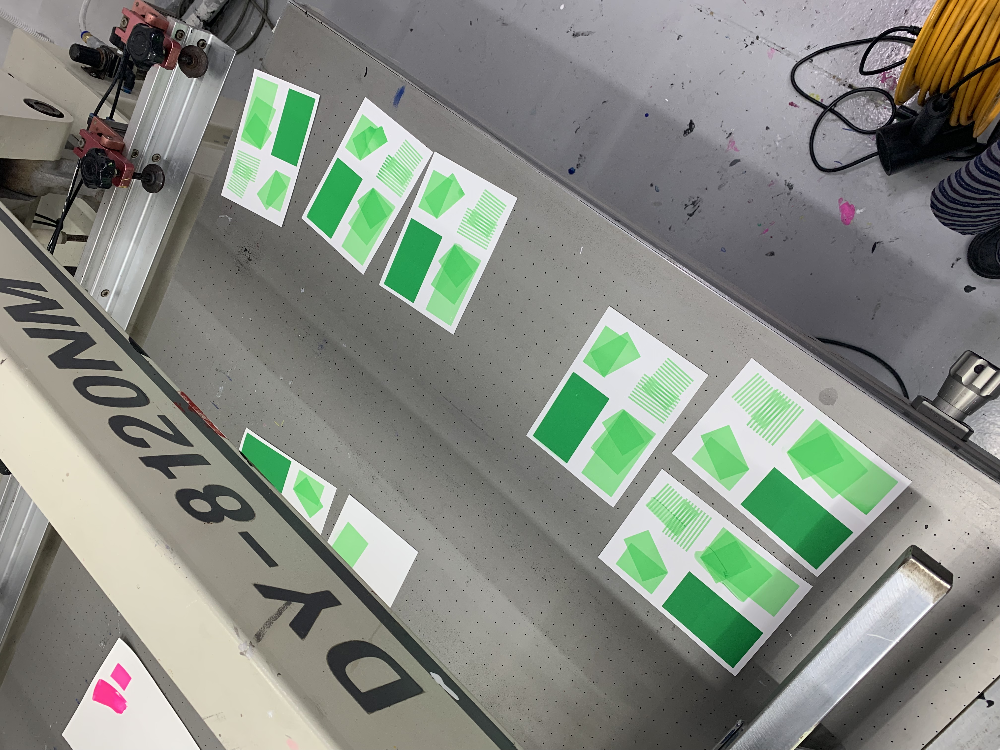 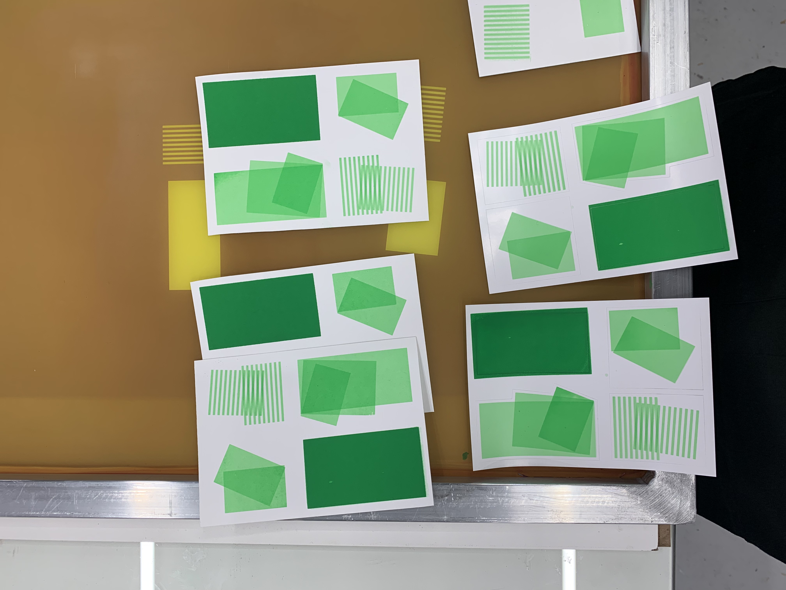여튼 실크스크린 작업은 재미있게 진행했다. 익숙하지 않은 과정이라 하나하나 신중을 기하여 작업했다. 스퀴지를 이용하여 판에 덜어낸 잉크를 구멍에 가볍게 덮어준 다음, 잉크를 강하게 밀어내어서 종이에 프린팅을 한다. 이런 식으로 5장 인쇄를 마치고, SAA 작업물들을 보며 이야기를 나누고 질의응답하는 시간을 가졌다. 내가 직접 작업하는 과정도 재미있었지만 기존에 작업하셨던 프린팅들을 깔아놓고 다같이 이야기 나누는 시간이 정말 유익했다. 우리가 오늘 했던 color 수업은 투명도를 조절한 잉크가 겹쳐지면서 보이는 효과를 확인해보는 것을 중점으로 했기 때문에 동일한 효과를 이용해서 작업했던 것들을 보여주셨다. 아니 난 오늘 네모네모들 찍어내는 것도 정말 쉽지 않았는데, 수채화같은 그림들을 어떻게 찍어내신건지 정말.. 신기했다. 그리고 투명도를 조절하면서 찍어내는 것만으로 수채화같은 효과를 낼 수 있다는 게 너무 놀라웠다. 우리가 처음으로 감상한 작품은 딱봐도 색이 굉장히 많이 쓰인 작업이었는데, 이런 작품은 작업기간을 한 달정도 잡고(ㄷㄷ), 분판은 작업물을 작가에게 받은 뒤에 SAA에서 직접 하신다고 하셨다. (어찌보면 당연한 일이다.. 분판작업이 실크스크린이나 리소에서 가장 까다로운 과정이고, 인쇄과정이나 분판에 대한 정확한 이해가 없으면 오히려 작업자에게 혼란을 주는 작업 데이터를 만들어버리기 때문)
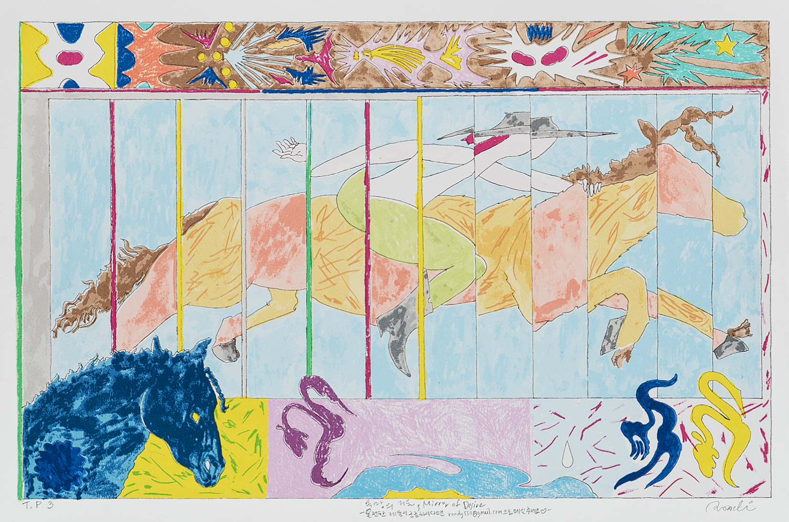또 녹아웃, 오버프린팅에 대해 설명해주시면서, 색이 겹치게 인쇄되는 경우에 녹아웃(이미지가 겹쳐진 부분에서 어느 한쪽을 비우는 방법)을 활용하기도 하지만 밝은색을 먼저 인쇄한 다음 어두운 색을 찍어내어 어두운 색이 밝은 색을 먹어버리게 하기도 한다고 하셨다. 근데 이것도 무조건적인 원칙이 아니고 작업의 성격에 따라 일부러 어두운 색을 먼저 인쇄하고 그 위에 더 밝은 것들을 차곡차곡 쌓기도 하는 것 같았다.
함께 본 어떤 작업에서는 우선 전체적으로 연한 회색을 인쇄한 다음, 투명도가 있는 화이트 잉크를 조금씩 올리면서 완성하셨다는 이야기를 해주셨다. 이런 얘기들을 듣는데 내가 그동안 했던 작업들은 정말.. 컴퓨터 화면에서만 존재하는 얇은 작업들이었구나.. 이런 생각들이 들었다. 실크스크린은 그냥 보통의 인쇄보다 조금 더 복잡한 과정이 포함된, 자동화된 방법은 다소 배제된.. 그 정도의 것인 줄 알았는데, 같은 이미지를 가지고도 작업자의 의도에 따라 상당히 다른 결과물을 낼 수도 있는, 똑똑한 센스가 필요한 계산적인 인쇄였던 것이다… 모든 일이 그렇겠지만, 실크스크린을 업으로 삼는다는 건 정말 본인이 일의 힘듦까지도 즐기지 않으면 절대 불가능할 것 같다고 생각했다. 그리고 내가 가장 궁금했던 건 인쇄를 위한 판을 만드는 방법이었는데, 시아노타입과 어느 정도 비슷한 부분이 있어서 설명은 쉽게 이해할 수 있었다. (감광액을 묻혀 필름을 올리고..~ 뭐 대충 이런 과정) 근데 시아노타입보다는 다양한 도구가 필요해서 그냥 재미삼아 혼자 시도해보기에는 더 난이도가 있는 듯.
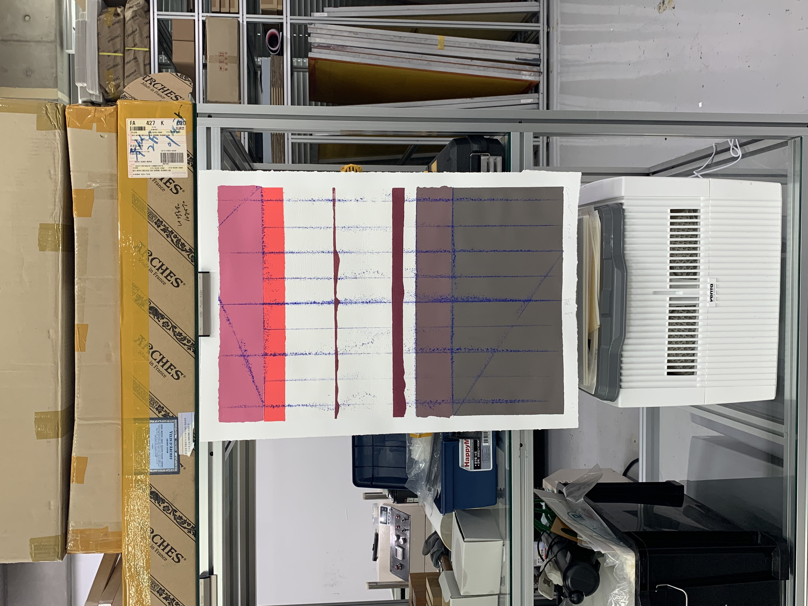+) 만든 잉크의 색을 확인하려면 무조건 판을 이용해 종이에 인쇄해 체크해야 한다고 하셨는데, 이것부터가 좀 충격이었다. 저렇게 번거로운 일을 계속..? 이분들은 장인이 맞다.. 그리고 리소와 실크스크린의 가장 특징적인 차이점이 무엇이라고 생각하시는지 여쭤봤는데, 아무래도 실크스크린은 색을 정말 하나하나 다 만드니까 완전 ‘핸드메이드’ 작업이라고 할 수 있으며, 크기가 정말 어마무시하게 커도 인쇄가 가능하다(인쇄 크기에 있어서 제약을 덜 받는다) 뭐 그런 얘기를 해주셨다.
+) 이번 워크샵에서 알게 된 언니가 있는데, 그 분은 거의 디지털 스크린 상의 그래픽만 전문적으로 다뤘어서 인쇄 영역에 흥미를 갖게 된 것이 얼마 안 됐고, 그래서 오늘 워크샵이 더욱 신선한 충격이었다고 했다. 곧 RISD로 석사 유학을 가시는데 학부생 시절에 교환학생도 유럽, 도쿄 이렇게 두 번 다녀오신 분이라 이것저것 이야기할 거리도 많았고, 이야기하다보니 나와 비슷한 점도 많아서 재밌었다.
사실 2시간이 제대로 된 작업을 하기에는 짧은 시간이다보니 엄청난 것을 기대하고 참여한건 아니었는데 너무너무 만족스러웠고, 실무의 최전선에 계시는 분들께 배울 수 있어서 더 유익했던 것 같다. 다음주 수업도 기대!
최초 작성일 2024.07.07
나는 네이버 블로그를 사용하지 않는다. 노트북의 자판을 두드리는 것보다 내가 좋아하는 펜을 들고 손글씨로 글을 쓰는 걸 좋아해서이기도 하지만, 구체적으로 생각해보니 내가 기존의 블로그 플랫폼을 사용하지 않는 좀 더 선명한 이유들이 떠올랐다.
나에게 네이버 블로그는 과잉-기능적이다. 나는 블로그를 제대로 작성해본 적은 없지만, 그것이 어떠한 기능들을 갖고 있는지는 대강 알고 있다. 방문자 수를 알 수 있는 것은 물론이고, 그 방문자들이 어떻게 유입이 되었는지, 상대방의 이웃목록에는 누가 있는지(이건 선택적으로 가릴 수 있긴 한 듯) 등.. 생각보다 많은 것들을 상세하게 파악할 수 있다. 나에게는 이런 기능들이 다소 과도하게 느껴졌다. (물론 블로그 사용자들 모두가 이 기능들을 좋아라 하진 않겠지만…) 나는 정말 단순한 구조만 갖춘 플랫폼이 필요했다.
네이버 블로그까지 써버린다면 사람들과 너무 과도하게 연결되는 느낌이 들 것 같다 (첫 번째 이유와 다소간 이어진다). 우리는 이미 여러 SNS를 통해서 관계를 형성하고 있고, 다양한 수치적 정보를 통해 얼마나 ‘잘’ 연결되어 있는지 눈으로 확인할 수 있다. 신경끄면 그만이겠지만, 나는 그게 잘 안 된다. 그런 정보들을 알려주면 자꾸 의식이 되고 그게 나의 행동을 바꾸기도 했다. 나는 누가 ‘볼 수도 있는’ 기록을 남기고 싶은 것이지 '누군가의 반응을 염두에 둔’ 기록을 (더 이상) 하고 싶지 않다. 이 글을 적어서 웹이라는 공간에 게시하고 있다는 것 자체가 누군가 보기를 바라는 의도를 포함하고 있기에 약간 모순적이긴 하지만.. 어쨌든 이 웹사이트에서 나는 원치 않는 정보와 마주하지 않아도 되고, 사람들과의 과도한 연결을 피할 수 있다.
내 기록을 보는 외부인과 상호작용 할 수 있는 새로운 방식을 모색하고 싶다. ‘공감’이라는 뭉뚱그려진 반응과 ‘댓글’이라는 일반적인 소통 방식말고, 좀 더 재미있는 상호작용 방식이 있으면 좋겠다는 생각이다. 이미 구조가 견고하게 갖추어져있는 기존 플랫폼에서 기술 활용에 대한 나의 자유도는 낮을 수밖에 없다. 아예 아무것도 없는 백지 상태에서 흥미로운 무언가를 만들어내고 싶다.
최초 작성일 2024.07.02